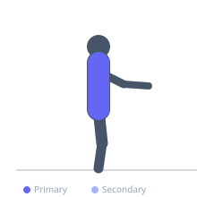
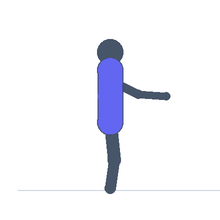

Exercise guide / Thoracic Rotation Stretch
Thoracic Rotation Stretch
The thoracic rotation stretch performed in a side-lying position targets thoracic spinal mobility through rotation while the hips remain relatively stable. Opening the top arm upward and over allows the thoracic vertebrae to rotate, improving the mobility segment that is most commonly restricted in office workers and strength athletes with tight anterior structures. Good thoracic rotation is fundamental for healthy shoulder and neck movement.
Primary muscles
erector spinae
rhomboid major
Secondary muscles
pectoralis major sternal
Equipment
No Equipment (Bodyweight)


Starting position
- Lie on your side with hips bent to 90 degrees and knees stacked. Both arms are extended in front of the chest, palms together.
Setup
- Use a mat for comfort. No equipment needed.
Steps
- Step 1: Lie on one side with knees and hips bent to 90 degrees, knees stacked.
- Step 2: Extend both arms in front of the chest with palms together.
- Step 3: Keep the hips and knees stacked and stationary — they should not roll during the movement.
- Step 4: Slowly rotate the top arm upward and open it toward the ceiling and floor behind you, following with the eyes and head.
- Step 5: Allow the arm to open as far as the thoracic spine allows, then hold 3–5 breaths before returning.
Coaching cues
- Let your eyes lead your hand
- Keep your knees pinned together on the floor — do not roll the hips
- Breathe wide into the chest at the end of range
Breathing
- Breathe deeply into the chest throughout. Each inhale and exhale can help the rotation progress slightly further.
Range of motion
- The top arm should travel as far toward the floor on the opposite side as thoracic rotation allows. For many people initially this will be far short of the floor.
Tempo
- Hold each rotation 3–5 breaths. 5–10 reps per side.
Common mistakes
- Rolling the hips during the stretch — the hip block should remain stationary
- Forcing the arm to the floor when the thoracic spine is not yet mobile enough
- Moving at the lumbar spine rather than the thoracic segment
Safety
- Avoid forcing the arm past the range of comfort
- If cervical pain occurs, limit head rotation and focus on arm movement only
Training
- mobility: 5–10 reps
- mobility: 1–3 sets
- Rest: {'mobility': 15}